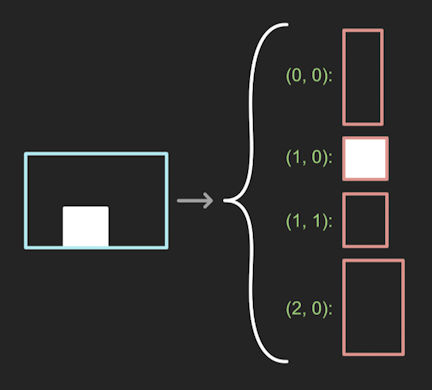
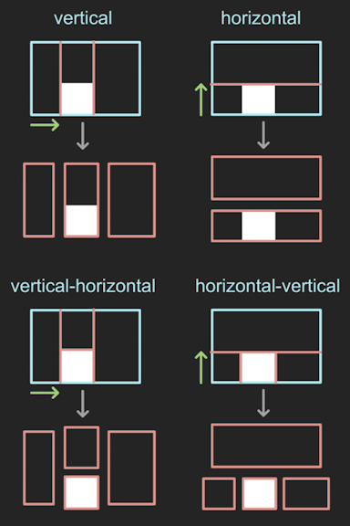
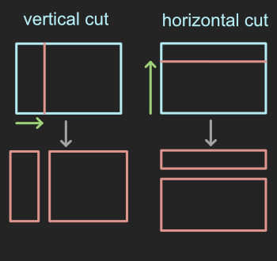
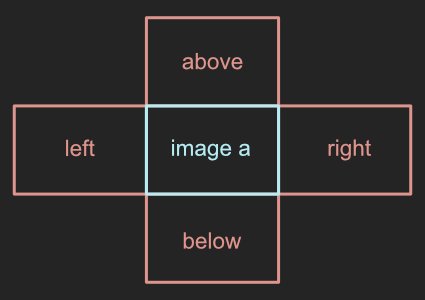

ops
channel
- cv_depot.ops.channel.has_super_brights(image)[source]
Determines if given image has values above 1.0.
- Parameters:
image (Image) – Image instance.
- Raises:
EnforceError – If image is not an Image instance.
- Returns:
Presence of super brights.
- Return type:
bool
- cv_depot.ops.channel.has_super_darks(image)[source]
Determines if given image has values below 0.0.
- Parameters:
image (Image) – Image instance.
- Raises:
EnforceError – If image is not an Image instance.
- Returns:
Presence of super darks.
- Return type:
bool
- cv_depot.ops.channel.invert(image)[source]
Inverts the values of the given image. Black becomes white, white becomes black.
- Parameters:
image (Image) – Image to be inverted.
- Raises:
EnforeError – If image is not an instance of Image.
- Returns:
Image
- Return type:
image
- cv_depot.ops.channel.mix(a, b, amount=0.5)[source]
Mix images A and B by a given amount. An amount of 1.0 means 100% of image A. An amount of 0.0 means 100% of image B.
- Parameters:
- Raises:
EnforceError – If a is not an Image instance.
EnforceError – If b is not an Image instance.
EnforceError – If amount is not between 0 and 1.
- Returns:
Mixture of A and B.
- Return type:
- cv_depot.ops.channel.remap(images, channel_map)[source]
Maps many images into a single image according to a given channel map.
- Parameters:
channel_map (ChannelMap) – Mapping of image channels into output image.
- Raises:
EnforceError – If images is not an instance of Image or list of Images.
EnforceError – If images are not of all the same width and height.
EnforceError – If channel_map is not an instance of ChannelMap.
- Returns:
Combined image.
- Return type:
- cv_depot.ops.channel.remap_single_channel(image, channels)[source]
Maps an image with a single channel to an image of a given number of channels.
draw
- cv_depot.ops.draw.checkerboard(tiles_wide, tiles_high, tile_shape=(10, 10))[source]
Draws a checkerboard of given width, height and tile shape.
- Parameters:
tiles_wide (int) – Number of tiles wide checkerboard will be.
tiles_high (int) – Number of tiles high checkerboard will be.
tile_shape (tuple[int], optional) – Width, height tuple of tile shape. Default: (10, 10).
- Raises:
EnforceError – If tiles_wide is not greater than 0.
EnforceError – If tiles_high is not greater than 0.
EnforceError – If tile width is not greater than 0.
EnforceError – If tile height is not greater than 0.
- Returns:
Checkerboard image.
- Return type:
- cv_depot.ops.draw.grid(image, shape, color='CYAN', thickness=1)[source]
Draws a grid on a given image.
- Parameters:
- Raises:
EnforceError – If image is not an Image instance.
EnforceError – If shape is not of length 2.
EnforceError – If width or height of shape is less than 0:
EnforceError – If color is not an instance of Color or BasicColor.
EnforceError – If thickness is not greater than 0.
- Returns:
Image with grid.
- Return type:
- swatch(shape, color, fill_value=0.0, bit_depth=<BitDepth.FLOAT32>
- swatch dtype: float32
- swatch bits: 32
- swatchsigned: True
- swatch type: float)
Creates an image of the given shape and color.
- Parameters:
- Raises:
EnforceError – If shape is not a tuple of 3 integers.
EnforceError – If shape has any zero dimensions.
- Returns:
Color swatch.
- Return type:
edit
- cv_depot.ops.edit.chop(image, channel='a', mode='vertical-horizontal')[source]
Chops up a given image into smaller images that bound single contiguous objects within a given channel.
Chop has the following modes:
- Parameters:
image (Image) – Image instance.
channel (str, optional) – Channel to chop image by. Default: ‘a’.
mode (str, optional) –
The type and order of cuts to ber performed. Default: vertical-horizontal. Options include:
vertical - Make only vertical cuts along the width axis.
horizontal - Make only horizontal cuts along the height axis.
- vertical-horizontal - Cut along the width axis first and then
the height axis of each resulting segement.
- horizontal-vertical - Cut along the height axis first and then
the width axis of each resulting segement.
- Raises:
EnforceError – If image is not an Image or NDArray.
EnforceError – If channel is not in image channels.
EnforceError – If illegal mode given.
- Returns:
Dictionary of form (width, height): Image.
- Return type:
dict
- cv_depot.ops.edit.crop(image, width_mult, height_mult, width_offset=0, height_offset=0)[source]
Crop a given image according to a width and height multipliers and offsets.
- Parameters:
image (Image) – Image to be cropped.
width_mult (float) – Width multiplier.
height_mult (float) – Height multiplier.
width_offset (float) – Width offset.
height_offset (float) – Height offset.
- Raises:
EnforeError – If image is not an instance of Image.
EnforeError – If width_mult is not > 0 and <= 1.
EnforeError – If height_mult is not > 0 and <= 1.
EnforceError – If crop dimensions are 0 in width or height.
EnforceError – If crop width bounds are outside image dimensions.
EnforceError – If crop height bounds are outside image dimensions.
- Returns:
Cropped image.
- Return type:
- cv_depot.ops.edit.cut(image, indices, axis='vertical')[source]
Splits a given image into two images along a vertical or horizontal axis.
- Parameters:
image (Image) – Image to be cut.
indices (int or list[int]) – Indices of where to cut along cross-axis.
axis (str, optional) – Axis to cut along. Options include: vertical, horizontal. Default: vertical.
- Raises:
EnforceError – If image is not an Image instance.
EnforceError – If indices is not an int or list of ints.
EnforceError – If illegal axis is given.
IndexError – If indices contains index that is outside of bounds.
- Returns:
Two Image instances.
- Return type:
tuple[Image]
- cv_depot.ops.edit.pad(image, shape, anchor=Anchor.TOP_LEFT, color='BLACK')[source]
Pads a given image into a new image of a given shape.
The anchor argument determines which corner of the given image will be anchored to the padded images respective corner. For instance, an anchor of ‘top-left’ will anchor the top-left corner of the given image to the top-left corner of the padded image. ‘center-left’ will vertically center the image and horizontally anchor to the left of the image. ‘center-center’ will vertically and horizontally center the image.
- Parameters:
image (Image) – Image to be padded.
shape (tuple[int]) – Shape (width, height, channels) of padded image.
anchor (Anchor or str, optional) – Where the given image will be placed within the new image. Default: top-left.
color (Color or BasicColor, optional) – Padding color. Default: BasicColor.BLACK
- Returns:
Padded image.
- Return type:
- cv_depot.ops.edit.reformat(image, width, height)[source]
Reformat given image by given width and height factors.
- Parameters:
image (Image) – Image instance.
width (float) – Factor to scale image width by.
height (float) – Factor to scale image height by.
- Raises:
EnforceError – If image is not an Image instance.
ValueError – If width or height of reformatted image is less than 1 pixel.
- Returns:
Reformatted image.
- Return type:
- cv_depot.ops.edit.staple(image_a, image_b, direction='right', fill_value=0.0)[source]
Joins two images along a given direction.
Images must be the same height if stapling along left/right axis. Images must be the same width if stapling along above/below axis.
- Parameters:
- Raises:
ValueError – If illegal direction given.
ValueError – If direction is left/right and image heights are not equal.
ValueError – If direction is above/below and image widths are not equal.
- Returns:
Stapled Image.
- Return type: